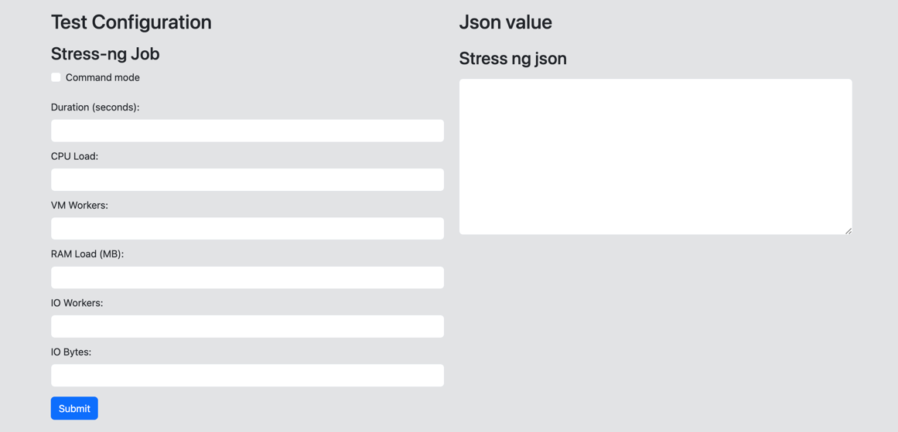
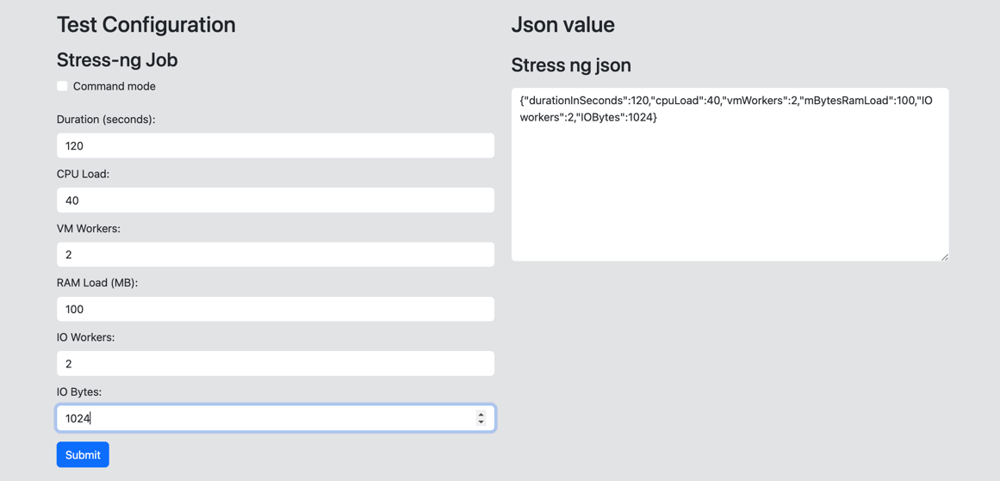
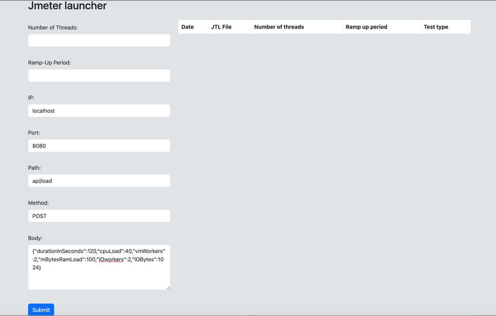
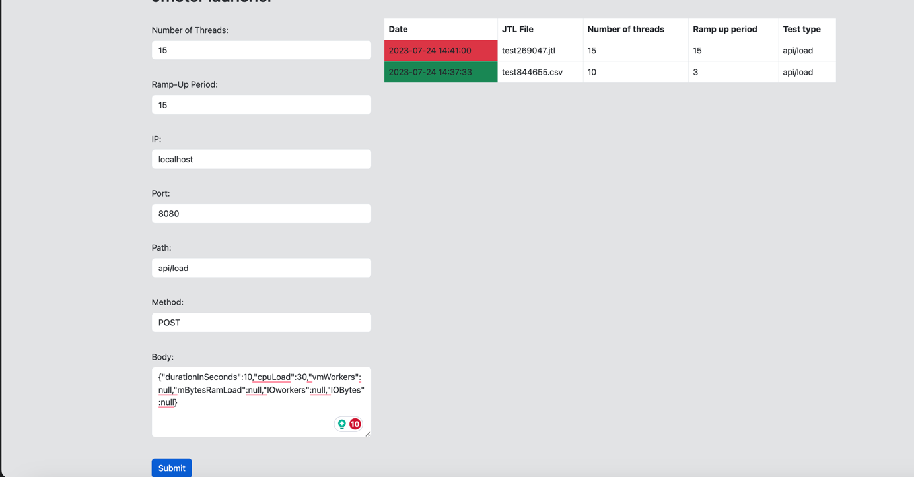
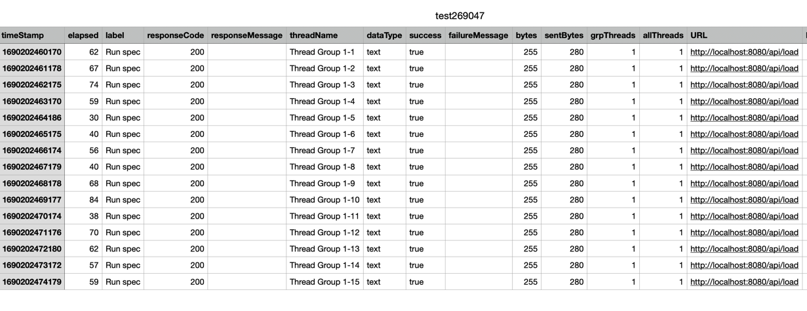
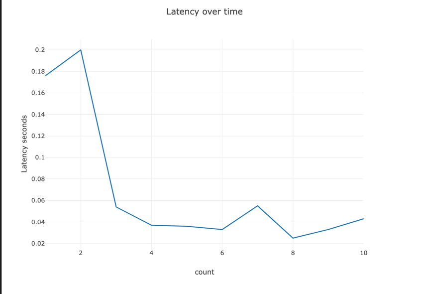
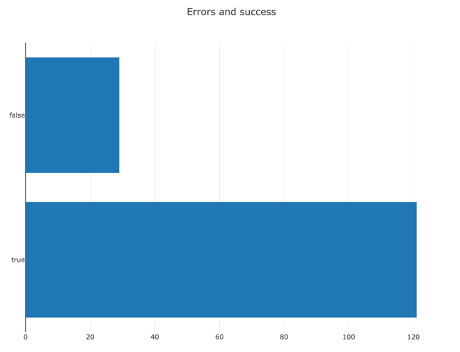

Introduction
In order to start using probe-builder you would most likely first want to set up the cluster-probe. Once you have an instance or a kubernetes cluster running with cluster-probe, you can start using the probe-builder.
Probe builder jar file
The easiest way to run a probe-builder is to run a jar file, you can download it here:
- probe-builder 1.0.0
then you can execute a java command to run it:
java -jar path/to/the/file/probebuilder.jar
now you can enter the browser under the: `localhost:4040' and you should be able to access the probe-builder ui.
User interface

on the left side you can configure your tests and on the left side after clicking submit you will see the generated payload for your configuration.

You can use the generated value for a given test to populate the body form:

You can configure the values for your jmeter test as well:
Number of threads: Allows the user to input the number of threads for the JMeter test, representing the number of virtual users that will be used to simulate concurrent requests.
Ramp-Up Period: Allows the user to specify the ramp-up period for the JMeter test, representing the time (in seconds) taken to reach the maximum number of threads specified.
IP: Allows the user to input the IP address of the target server where the JMeter test will be performed.
Port: Allows the user to input the port number on which the target server is running.
Path: Allows the user to input the API path for the JMeter test.
Method: Allows the user to specify the HTTP method (e.g., GET, POST) to be used in the JMeter test.
Once we click the submit button, the results table will be populated with our tests:

where red background informs the user about the fact that the test has not been finished yet where the green background is applied to the tests have been finished.
For each test there is a result file generated with the name of 'test{testId}.csv'.

as well as a html file with the plots:

